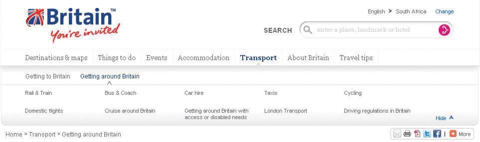
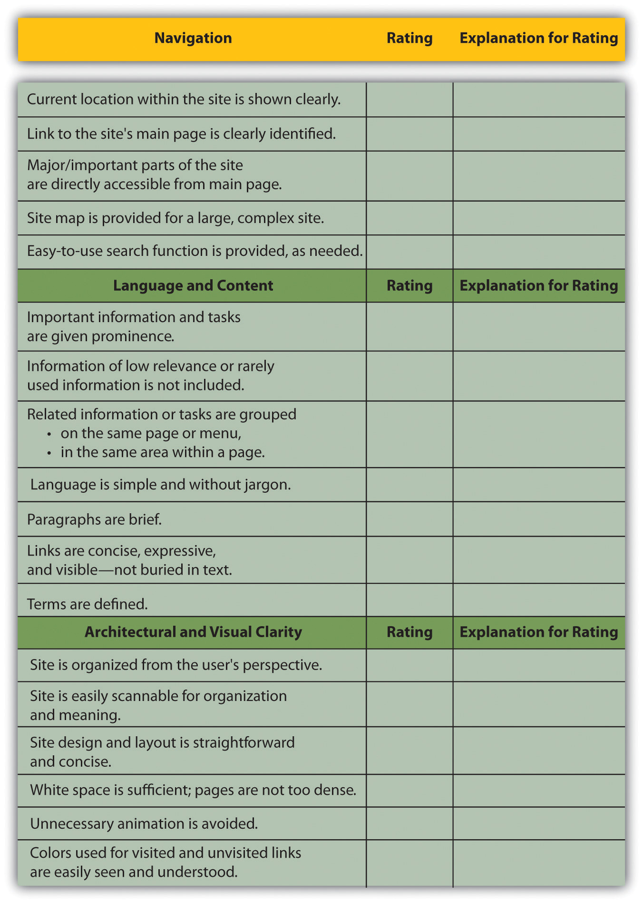

When Steve Krug wrote his excellent Web usabilityThe measure of a Web site’s ability to accomplish the goals of the user. book, he aptly called it Don’t Make Me Think!Steve Krug, Don’t Make Me Think! A Common Sense Approach to Web Usability, 2nd ed. (Berkeley, CA: New Riders, 2005). Designing a site for best usability means that users don’t have to figure out what to do; they are just able to do it.
Use standard conventionsElements such as links, menus, colors, and layout that are distinct and can be recognized easily by users., such as links that are distinct (blue and underlined is standard), menus top or left, and the logo in the top left-hand corner. Search boxes are usually on the top of the page and should use standard wording such as “search” on buttons. Following standards for important elements that are familiar to Web users means that they know immediately where to look for or how to use them. Important elements (such as menus, logos, colors, and layout) should be distinct, easy to find, and consistent throughout the Web site.
Common page elementsItems that appear on every page of a Web site. are those elements that are on every page of the Web site. These can include main navigation, a search box, a link to the home page, and sign-up forms.
The information architectureThe layout and structure of a Web site, which should be according to information hierarchy and categories. of a site is crucial to usability. Topics and categorization should flow from broad to narrow and should be built around users’ needs and not company structure. An intuitively designed structure will guide users to their goals.
The site mapOn a Web site, a page that links to every other page in the Web site and displays these links organized according to the information hierarchy. should be available from every page and should clearly show the information architecture of the Web site. Dynamic site maps can be employed so that the site map is updated automatically as information is added to the Web site.
As well as carefully thought-out information architecture, the navigationHow a Web user moves through a Web site and the elements that assist the user. should guide users easily through both top-level and deeper pages. Navigation should also let users know where they are in the site (especially since not all users arrive via the home page). Breadcrumb linksLinks, usually on the top of the page, that indicate where a page is in the hierarchy of the Web site., clear page titles, URLs (uniform resource locators)The Web address that is unique to every page on the Internet., and menu changes all help show the user where she is.
Figure 13.2
VisitBritain.com uses breadcrumb links and menu changes so that the users know where they are in the Web site.
AccessibilityThe degree to which a Web site is available to users with disabilities or technical limitations. makes Web sites easy to use and easy to scale. In some countries, accessibility is a legal requirement of government Web sites. Some key points of accessibility include the following:
Just like in Hansel and Gretel, breadcrumb links help show users the path they have taken in the Web site. Unlike the fairy story, these breadcrumbs shouldn’t disappear as you navigate through the Web site.
Scaling and scalability—why is it important that Web sites can scale?
Content needs to be written so that users can grab the information they need in as little time as possible. Text can be made more easily readable by doing the following:
On the page, use an inverted pyramid style, or newspaper style, for your copy. The bulk of the information should be at the top of the page to make for easy scanning.
There are some key “don’ts” when it comes to building a user-friendly Web site:
Usability and accessibility guidelines are useful for checking that all elements have been dealt with. Massachusetts Institute of Technology (MIT) Information Services and Technology provides a usability checklist online at http://ist.mit.edu/services/consulting/usability/guidelines.
The following is a copy of some of the items on the MIT checklist. Use it to see how your favorite Web site measures up.
Figure 13.3 Some of the Usability Guidelines from the MIT Checklist
